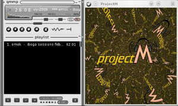
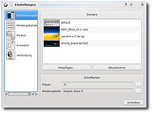

qmmp
Dieser Artikel wurde für die folgenden Ubuntu-Versionen getestet:
Ubuntu 16.04 Xenial Xerus
Ubuntu 14.04 Trusty Tahr
Zum Verständnis dieses Artikels sind folgende Seiten hilfreich:
Qmmp  (Qt-based Multimedia Player) ist ein einfacher Audioplayer nach dem Vorbild von XMMS oder Audacious. Mit dem Unterschied, dass er aktueller als XMMS ist und als einziger dieser drei die Grafikbibliothek Qt verwendet, auf der auch KDE beruht. Die Installation der umfangreichen KDE-Bibliotheken ist aber nicht notwendig. Er bietet damit eine leichtgewichtige und stabile Alternative zu Programmen wie Amarok 2 und Clementine.
(Qt-based Multimedia Player) ist ein einfacher Audioplayer nach dem Vorbild von XMMS oder Audacious. Mit dem Unterschied, dass er aktueller als XMMS ist und als einziger dieser drei die Grafikbibliothek Qt verwendet, auf der auch KDE beruht. Die Installation der umfangreichen KDE-Bibliotheken ist aber nicht notwendig. Er bietet damit eine leichtgewichtige und stabile Alternative zu Programmen wie Amarok 2 und Clementine.
Qmmp verwendet die selbe Fensteraufteilung wie seine Vorbilder: ein Hauptfenster, eine Playlist und einen zuschaltbaren 10-Band-Equalizer inklusive der Möglichkeit, Presets zu laden und zu speichern.
 Einige Eigenschaften:
Winamp- und XMMS-Skins nutzbar
Scrobblen mit last.fm und libre.fm
Videowiedergabe via MPlayer
Visualisierung
Liedtext-Modul
Audio-CD-Modul
Multimediatasten
Audiovisualisierung via projectM
Installation¶
Das folgende Paket muss installiert werden [1]:
qmmp (universe)
 mit apturl
mit apturl
Paketliste zum Kopieren:
sudo apt-get install qmmp
sudo aptitude install qmmp
Für die Nutzung von projectm müssen folgende Pakete installiert werden:
libprojectm2 (universe)
qmmp-plugin-projectm (universe)
mit apturl
Paketliste zum Kopieren:
sudo apt-get install libprojectm2 qmmp-plugin-projectm
sudo aptitude install libprojectm2 qmmp-plugin-projectm
PPA¶
Die aktuelle Version ist über ein "Personal Packages Archiv" (PPA) [2] erhältlich. Falls QMMP bereits aus den offiziellen Paketquellen installiert wurde, sollte das Programm vorher deinstalliert werden.
Adresszeile zum Hinzufügen des PPAs:
ppa:forkotov02/ppa
Hinweis!
Zusätzliche Fremdquellen können das System gefährden.
Ein PPA unterstützt nicht zwangsläufig alle Ubuntu-Versionen. Weitere Informationen sind der  PPA-Beschreibung des Eigentümers/Teams forkotov02 zu entnehmen.
PPA-Beschreibung des Eigentümers/Teams forkotov02 zu entnehmen.
Damit Pakete aus dem PPA genutzt werden können, müssen die Paketquellen neu eingelesen werden.
Nach dem Aktualisieren der Paketquellen können folgende Pakete installiert werden:
qmmp (ppa)
qmmp-plugin-pack (ppa)
mit apturl
Paketliste zum Kopieren:
sudo apt-get install qmmp qmmp-plugin-pack
sudo aptitude install qmmp qmmp-plugin-pack
oder ab Ubuntu 16.04:
qmmp-qt4 (ppa)
qmmp-plugin-pack-qt4 (ppa)
mit apturl
Paketliste zum Kopieren:
sudo apt-get install qmmp-qt4 qmmp-plugin-pack-qt4
sudo aptitude install qmmp-qt4 qmmp-plugin-pack-qt4
Verwendung¶
Bei Ubuntu-Varianten mit einem Anwendungsmenü findet man einen Programmstarter unter "Multimedia -> Qmmp". Wer die Wiedergabe beim Starten sofort fortsetzen möchte, muss den Starteintrag im Menü editieren und die Option --play hinzufügen. Alternativ kann das Programm auch im Terminal gestartet werden [3]:
qmmp --play
Playlist¶
Titel können in einer Wiedergabeliste gespeichert bzw. geladen werden. Der Player kann mit .pls-, .m3u- und .xspf-Playlisten umgehen.
Radio¶
Über die Playlist kann man auch ganz einfach Internetradio-Streams laden. Möchte man SHOUTcast als Portal verwenden, sind die Programme TunaPie und Streamtuner2 besser geeignet.
last.fm¶
Es gibt auch die Möglichkeit, die Songs, die man gerade hört, an last.fm zu scrobbeln. Hierfür braucht man allerdings einen gültigen Account.
Die Zugangsdaten können unter "Qmmp -> Einstellungen -> Module -> Sonstige -> Scrobbler-Modul" eingetragen werden. Zum Schluss das Modul noch aktivieren, damit die Songdaten an last.fm übertragen werden.
Einstellungen¶
Hier sind dann folgende Einstellmöglichkeiten zu finden: 
"Erscheinungsbild": Themes installieren und ändern
"Wiedergabeliste": Einstellungsmöglichkeiten für die Anzeige der Wiedergabeliste
"Module": Qmmp verwendet Module für die verschiedenen Audiocodecs, die Soundausgabe sowie für Effekte und Visualisierungen. Außerdem sind hier noch weitere Zusatzprogramme für Scrobbeln und Dateioperationen zu finden.
"Erweitert": verschiedene Einstellungsmöglichkeiten wie ein Systray-Symbol oder Transparenz
"Verbindung": Proxy-Einstellungen
Erscheinungsbild¶
Das Aussehen lässt sich sehr einfach verändern, indem man Qmmp einen anderen Skin verpasst. Dabei kann man sich aus dem großen Angebot von XMMS-, Audacious- und Winamp-Classic-Skins bedienen (siehe Audacious).
Hinweis:
Die neuen Winamp-Skins ("modern") funktionieren nicht. Deshalb sollte man darauf achten, einen "Classic Skin" mit der Dateiendung .wsz auszuwählen.
Skin-Datei herunterladen und im Ordner ~/.qmmp/skins/ speichern
"Qmmp -> Einstellungen -> Erscheinungsbild -> Skin" auswählen
Tastenkürzel¶
| Qmmp | |
| Strg + P | Einstellungsmenü |
| Strg + I | Tags einsehen und ändern |
| Strg + Q | Programm beenden |
| Wiedergabe | |
| X | Wiedergabe starten |
| B | nächster Titel |
| Z | vorheriger Titel |
| C | Pause |
| V | Stop |
| J | Suchfunktion |
| Playlist | |
| F | Datei hinzufügen |
| D | Verzeichnis hinzufügen |
| U | Url hinzufügen |
| Q | Datei an Warteschlange anhängen |
| Alt + I | MP3-Tags bearbeiten |

 Übersichtsartikel
Übersichtsartikel- Erstellt mit Inyoka
-
 2004 – 2017 ubuntuusers.de • Einige Rechte vorbehalten
2004 – 2017 ubuntuusers.de • Einige Rechte vorbehalten
Lizenz • Kontakt • Datenschutz • Impressum • Serverstatus -
Serverhousing gespendet von